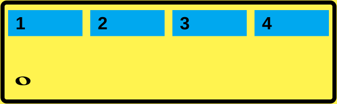
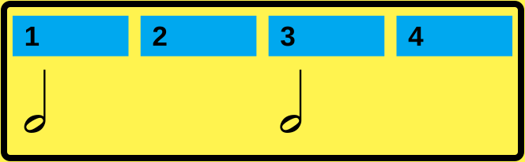
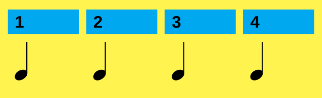
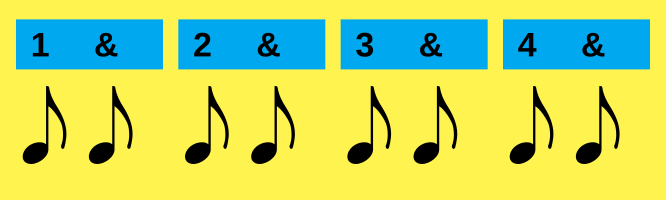
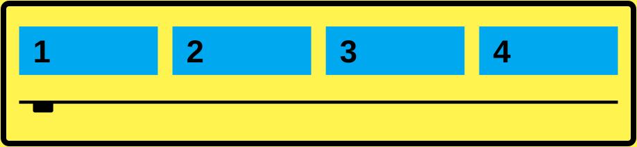
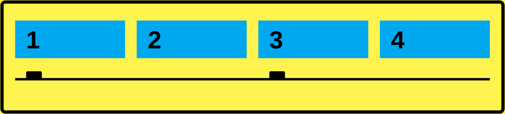
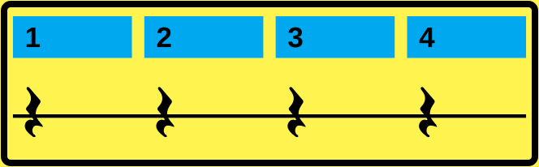
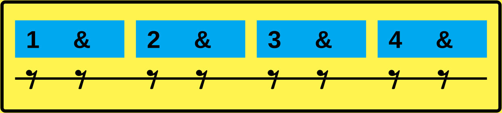

01 / Zeit & Puls
Musik findet in der Zeit statt
Anders als in einem Bild, in welchem alles sofort sichtbar ist, entfalten sich Ereignisse in der Musik nacheinander. Klänge beginnen, dauern eine bestimmte Zeit und enden.
Musik: sequenziellEreignisse entfalten sich nacheinander in der Zeit.
Bild: simultanDie visuellen Elemente sind gleichzeitig vorhanden und können grundsätzlich auf einmal erfasst werden.
Rhythmus gestaltet Zeit
Für Rhythmus interessiert uns zunächst nicht, wie hoch ein Ton ist, sondern wann etwas passiert und wie lange es dauert.
Wir brauchen einen gleichmäßigen Puls
Um Zeit musikalisch messbar zu machen, teilen wir sie in gleichmäßige Schläge ein. Wie das Ticken einer Uhr:
1 – 2 – 3 – 4 – 5 – 6 – 7 – 8 – …
Inneres Zeitgefühl
Ein Metronom kann uns einen gleichmäßigen Puls vorgeben. Unser Ziel ist jedoch nicht, nur auf einen äußeren, externen Klick zu reagieren.
Wir wollen lernen, diesen Puls selbst zu tragen.
Dafür verbinden wir den musikalischen Puls mit einer gleichmäßigen körperlichen Bewegung. Während dieses Kurses wird deshalb immer ein Körperteil die Zeit markieren.
Ich empfehle den Fuß.
Der Fuß wird zu unserem inneren Metronom.
Weiter zu Notation & Takt ↓02 / Notation & Takt
Rhythmische Notation
In der westlichen Musiknotation wird die Dauer von Tönen durch verschiedene Notenwerte dargestellt.
Schläge werden zu Takten gruppiert
Damit wir nicht endlos weiterzählen, fassen wir eine bestimmte Anzahl von Schlägen zu wiederkehrenden Gruppen zusammen. Eine solche Gruppe heißt Takt.
Der 4/4-Takt
Die häufigste Gruppierung besteht aus vier Schlägen:
| 1 2 3 4 | 1 2 3 4 |
- 4
- Wie viele Schläge gehören zu einem Takt? Vier Schläge.
- /4
- Welcher Notenwert dient als Zählzeit? Die Viertelnote.
03 / Die Notenwerte
Jetzt erst kommen die Notenwerte
In der westlichen Musiknotation verwenden wir verschiedene Notenwerte, um die Dauer eines Tons darzustellen.
Im 4/4-Takt lernen wir zunächst vier davon kennen: ganze, halbe, Viertel- und Achtelnoten.
Die ganze Note
Die ganze Note dauert 4 Schläge. Man braucht also nur eine einzige ganze Note, um einen 4/4-Takt zu füllen.

Die halbe Note
Die halbe Note dauert 2 Schläge, also füllt sie in einem 4/4-Takt den halben Takt. Man braucht also zwei halbe Noten, um einen Takt zu füllen.

Die Viertelnote
Die Viertelnote dauert 1 Schlag, also füllt sie in einem 4/4-Takt ein Viertel des Taktes. Man braucht also vier davon, um einen 4/4-Takt zu füllen.

Die Achtelnote
Die Achtelnote dauert einen halben Schlag. Sie füllt in einem 4/4-Takt ein Achtel des Taktes. Man braucht also acht davon, um einen Takt zu füllen.

04 / Die Pausenzeichen
Für Stille brauchen wir Pausenzeichen
Auch Stille nimmt Zeit ein. Deshalb gibt es zu jedem Notenwert eine entsprechende Pause.
Tippe auf eine Abbildung, um sie zu vergrößern. Die Grafiken bleiben auch beim Zoomen scharf.
Ganze Note & ganze Pause 4 Schläge

Halbe Note & halbe Pause 2 Schläge

Viertelnote & Viertelpause 1 Schlag

Achtelnote & Achtelpause ½ Schlag

Ende der Einführung
Die Grundlagen sind gelegt.
Du hast Puls, Takt, Notenwerte und Pausenzeichen kennengelernt. Kehre zu einem Abschnitt zurück, wenn du etwas noch einmal nachlesen möchtest.
Weiter zu Kapitel 1 Zurück zum Anfang ↑